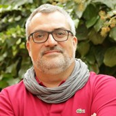

Aplicacions i recursos
Eines interactives per a la docència i la gestió educativa. Funcionen directament al navegador.

Tecnologia educativa · Innovació pedagògica
Professor titular de Tecnologia Educativa · FPCEE Blanquerna, Universitat Ramon Llull
Mestre, psicopedagog i doctor en Pedagogia. És investigador responsable de la línia eduTIC del grup de recerca consolidat PSiTIC (Pedagogia, Societat, Innovació i TIC) i coordinador del Màster Universitari en Lideratge de la Innovació Pedagògica i Direcció de Centres Educatius. Compagina l'activitat acadèmica amb la divulgació en diferents mitjans de comunicació.
Eines interactives per a la docència i la gestió educativa. Funcionen directament al navegador.